I'm into tech. Mechanical keyboards and innovations and improvements to PC components, mainly GPUs are what really interest me.
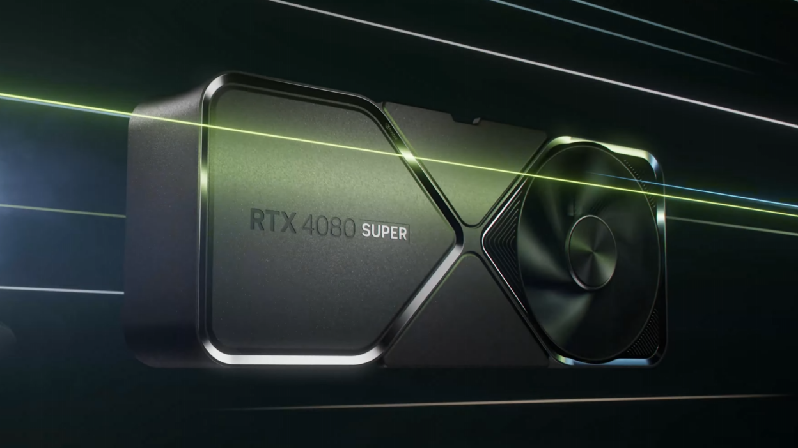 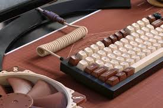I like games, ever since building a nicer system I've been playing Star citizen, and and when the weather starts to get nice I like going out, lake days are the best.
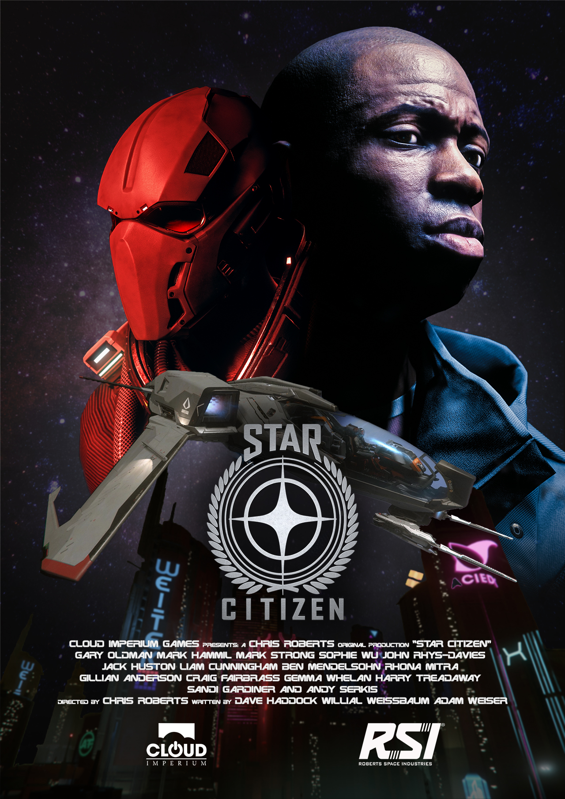 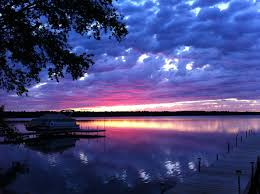My music taste has a lot of different stuff going on, some of my favorite artists are TV girl, Stereolab, and J.Cole
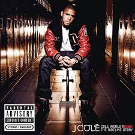 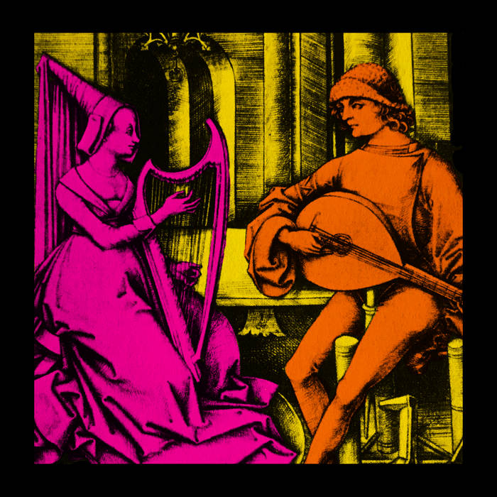 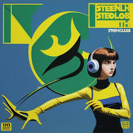FX's Atlanta has been at the top of my list for a minute. My favorite animated shows are Invincible and Pantheon, and my favorite anime is Hunter x Hunter
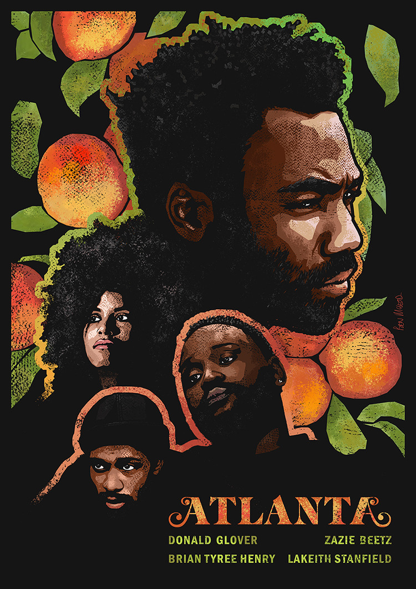 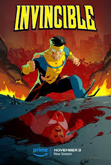 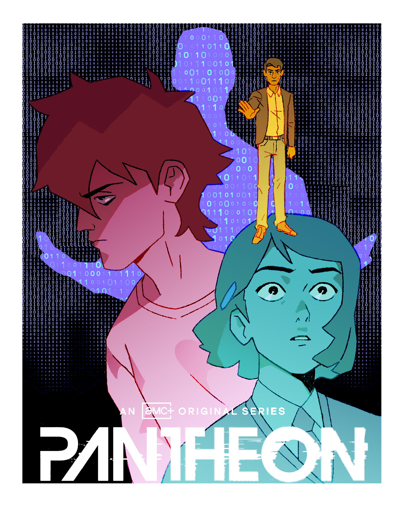 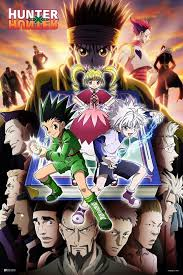I'm a big sci-fi fan, and my favorite author would probably be Isaac Asimov, my favorite books by him are "The Robots of Dawn", "I, Robot", and "Foundation and empire". I'd say getting into hard sci-fi has been one of my biggest inspirations, especially relating to my future career choice and interests.
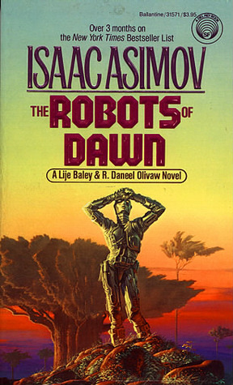 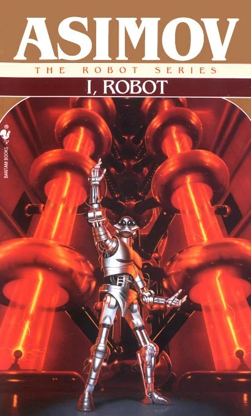 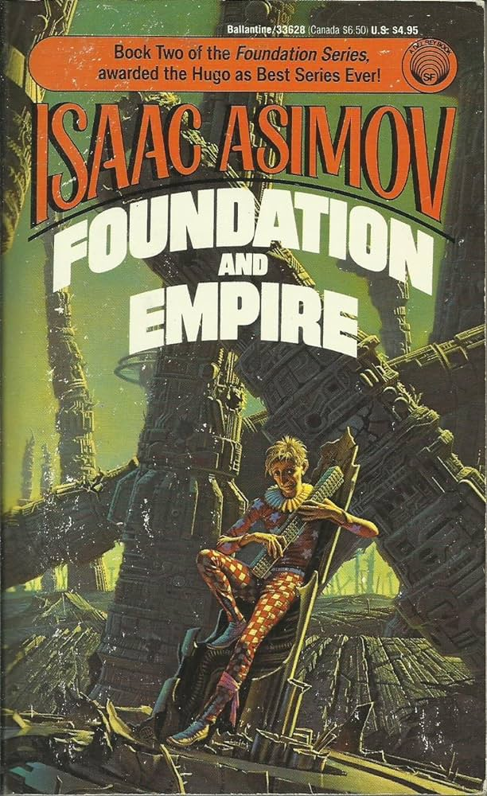 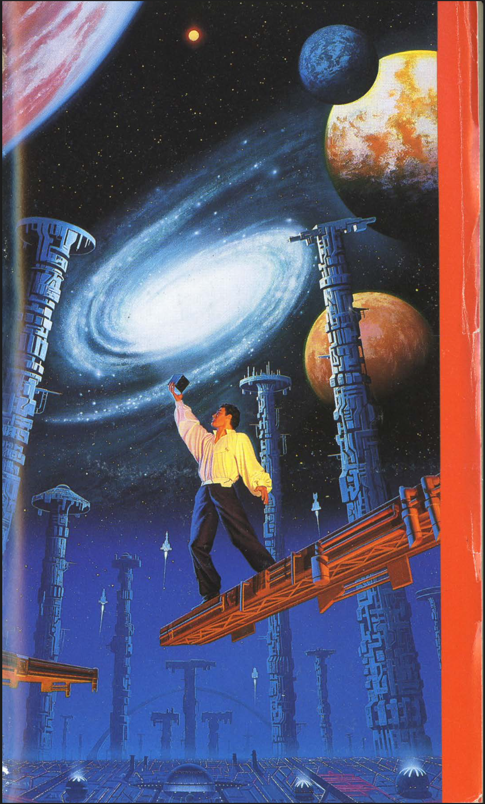